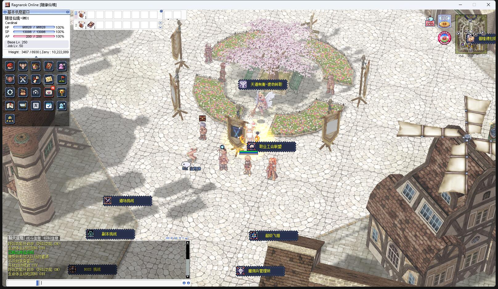
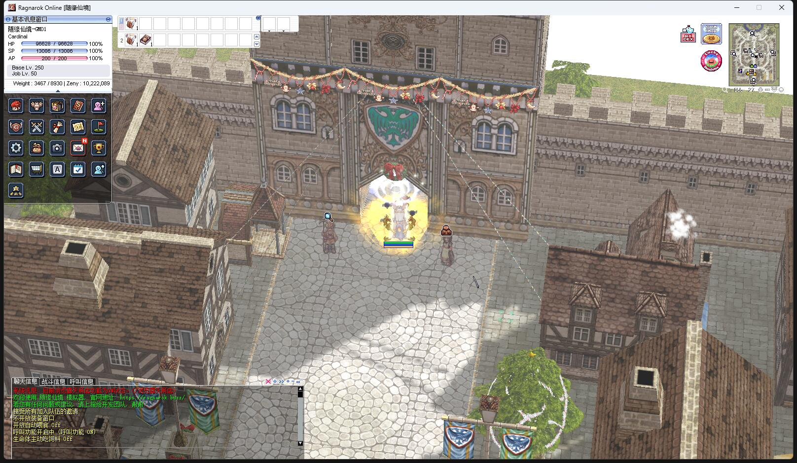

| 名称 | 描述 | 预览 | 下载 | 提取码 |
|---|---|---|---|---|
| data_maps_new.grf | 新地图（含韩服 2022 新地图 和 部分自定义地图） | 腾讯微云 | muhtmi | |
| data_maps_new_prontera.grf | 新首都地图（建筑物和材质完全重构） | 腾讯微云 | 8tgij4 | |
| data_maps_prontera_roadside_sakagura.grf | 首都微改（水池南边道路两侧樱花树） | Download | sgxugb | |
| data_maps_prontera_center_sakagura.grf | 首都微改（水池改成樱花树） |  | Download | 7pknzg |
| data_maps_prontera_christmas.grf | 首都微改（水池改成圣诞树，全城布置圣诞装饰） |  | Download | epwcct |
| data_maps_prontera_streetshop.grf | 首都微改（拆掉道路两边的墙，但是依然有空气墙无法走过，纯粹减少遮挡） | Download | 4pgxrk | |
| data_maps_prontera_mini.grf | 迷你首都（不建议用，纯粹图档尺寸缩小了，但是地图坐标范围没有变，需要配合修改地图坐标，否则会错位） | - | Download | 5zyhja |
| data_maps_old.grf | 改版老地图，不建议使用 | 太多，暂不提供预览 | 腾讯微云 | 5g5av7 |